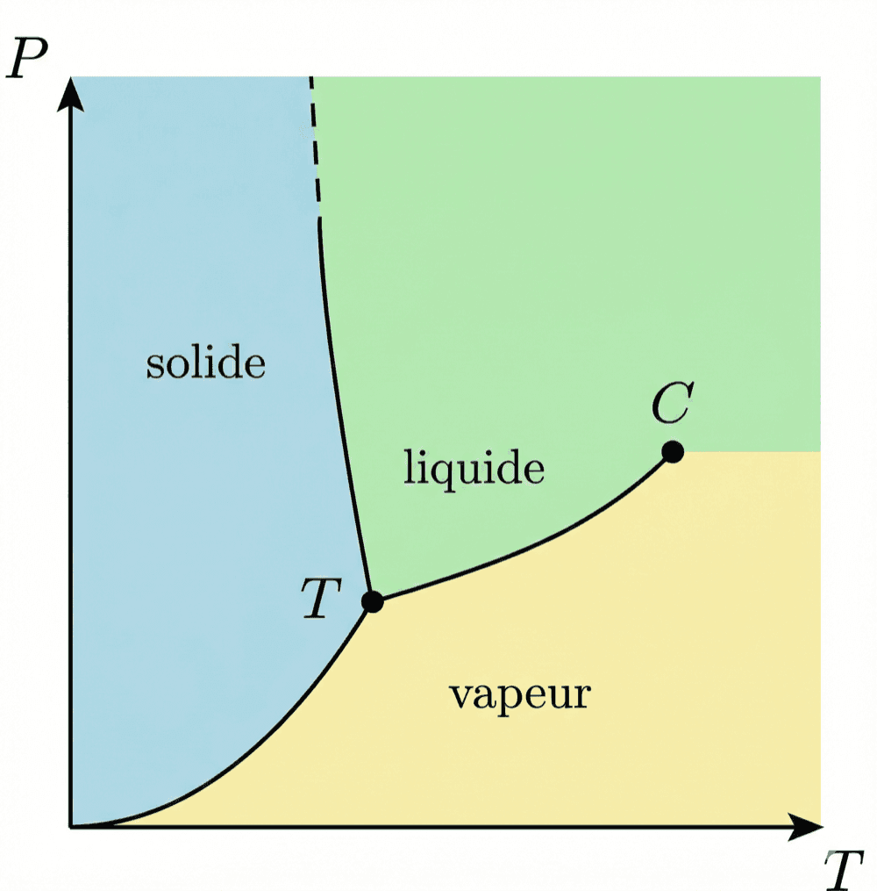

Changements d'état et diagramme de Clapeyron
Six transitions, six noms — et une seule règle pour les orienter : solide → liquide → gaz, on monte en énergie.
Pendant tout le changement, la température ne bouge pas.
Tu sais maintenant définir un système et nommer ses transformations. On s'intéresse à partir d'ici à la matière elle-même : sous quelles formes elle existe, et comment elle passe de l'une à l'autre. Ce passage porte un nom — un changement d'état — et il obéit à une règle qui ne bouge jamais : pendant toute la transition, ce qui reste constant, c'est la température.
Trois états, pour poser le décor. Ce qui les sépare tient en une phrase : à quel point les atomes sont liés entre eux. Tout le reste en découle — la compressibilité, le fait d'avoir un volume propre, le fait d'avoir une forme propre.
| État | Organisation | Compressible ? | Volume propre ? | Forme propre ? |
|---|---|---|---|---|
| Solide | Atomes fortement liés | Non — incompressible | Oui | Oui |
| Liquide | Atomes liés | Très peu | Oui | Non (il prend la forme du récipient) |
| Gaz | Atomes faiblement liés | Oui | Non | Non |
Passer d'un de ces trois états à un autre, c'est un changement d'état. Il y en a six : trois dans un sens, trois dans l'autre.
| Transition | Nom | Transition inverse | Nom inverse |
|---|---|---|---|
| Solide → Liquide | Fusion | Liquide → Solide | Solidification |
| Liquide → Gaz | Vaporisation | Gaz → Liquide | Condensation (liquéfaction) |
| Solide → Gaz | Sublimation | Gaz → Solide | Déposition |
- Fusion : le solide « fond » — le mot vient directement du latin fundere, couler. Tu fonds du beurre, de la glace.
- Vaporisation : ça devient de la vapeur. Logique.
- Sublimation : le mot vient du latin sublimis = « vers le haut ». Le solide monte directement en gaz, sans passer par le liquide. La neige carbonique (CO₂ solide) se sublime à température ambiante — elle disparaît sans jamais former de flaque.
- Condensation : ça se « condense », ça se tasse — les molécules de gaz se rapprochent pour former un liquide. C'est ce qui se passe sur un miroir de salle de bain après une douche.
- Solidification : ça devient solide. Simple.
- Déposition : le gaz se « dépose » directement en solide. Le givre sur une vitre froide, c'est de la déposition (la vapeur d'eau de l'air se solidifie directement).
Règle générale : solide → liquide → gaz = on monte en énergie (on apporte de la chaleur). Dans l'autre sens = on descend en énergie (on retire de la chaleur).
Reste à ranger tout ça sur une seule image. Le diagramme de Clapeyron, ou diagramme P–T, résume les domaines de stabilité des 3 états : à chaque couple pression–température correspond l'état stable de la substance, et les courbes qui séparent les domaines sont exactement les changements d'état qu'on vient de nommer. Il comporte deux points remarquables : le point triple, où les 3 états coexistent (T et P uniques pour chaque substance) ; et le point critique, au-delà duquel la distinction entre liquide et gaz disparaît — la matière est dans un état intermédiaire.

- 1 Le cas général. Pour la plupart des substances, la courbe de fusion a une pente positive (dP/dT > 0) : quand la pression augmente, la température de fusion augmente aussi.
- 2 L'eau fait l'inverse. Pour l'eau, la pente est négative : quand P augmente, T de fusion diminue. C'est parce que la glace est moins dense que l'eau liquide (ΔV_fus < 0, à cause des liaisons hydrogène — vues au chapitre 6).
- 3 La conséquence que tu connais déjà. C'est pourquoi on peut patiner sur la glace : la pression de la lame fait fondre la glace.
Tu sais sous quelles formes la matière existe et comment elle passe de l'une à l'autre. Reste à la décrire par le calcul — et sur les trois états, un seul se laisse résumer par une équation simple : le gaz. C'est la fiche suivante.